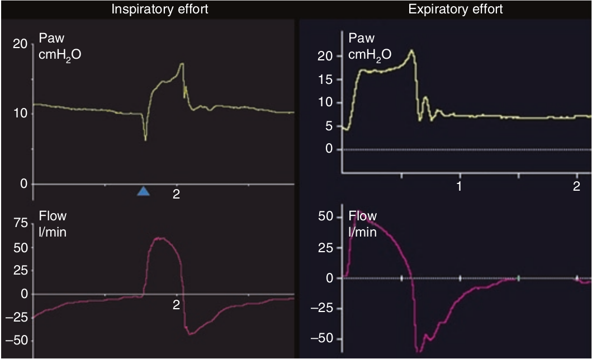

هر گونه انحراف منحنی شدت جریان دمی از الگوی افت نمائی، علامت تلاش عضلات تنفسی بیمار (دمی یا بازدمی) است. الگوی گرد یا مربعی منحنی شدت جریان علامت فعالیت قابل توجه دمی بیمار در هنگام هواگیری ریه ها است و خود نشانه ناکافی بودن مقدار فشار حمایتی (PS) می باشد. برعکس انحراف منحنی شدت جریان به سوی خط پایه نشانه انقباض عضلات بازدمی و یا توقف تلاش نیرومند قبلی هنگام هواگیری ریه ها می باشد که علت آن فشار حمایتی بیش از اندازه و یا مدت هواگیری طولانی است.

کدام یک از موارد زیر علامت تلاش دمی هنگام هواگیری ریه ها می باشد؟
۱ - شکل گرد منحنی شدت جریان دمی
۲ - افت نمائی شدت جریان
۳ - تغییر شیب منحنی شدت جریان بسوی خط پایه
۴ - ثابت بودن شدت جریان در هنگام هواگیری ریه ها
۵ - جهش فشار در شروع دم